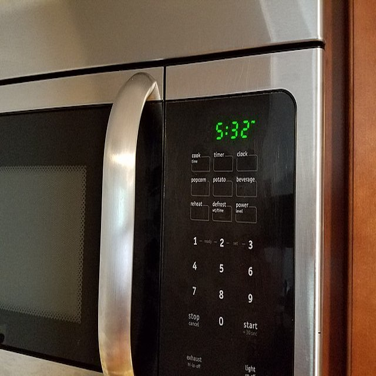
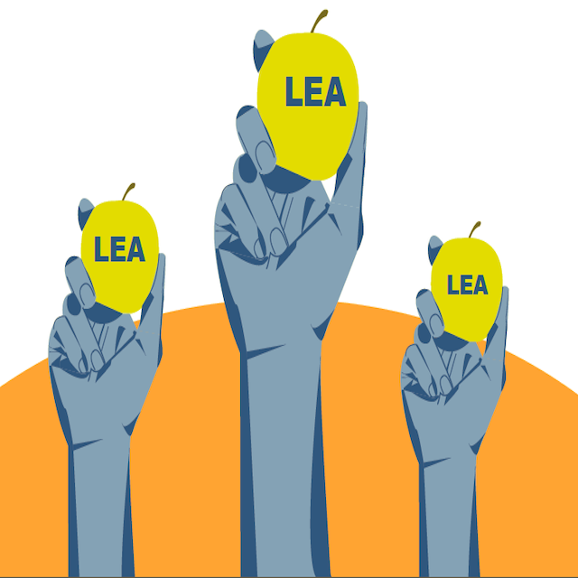

My Projects

Microwave User Research
Series of personas and storyboards for use to analyze how effective the user interface and experience are conveyed of Brown University's microwaves.

I am a current senior at Brown University studying Economics and Urban Studies. Most of my work, including that which is in this portfolio, questions how design and human behavior influence community building. Thank you for checking out my projects and please reach out if you have any questions!


Built by funkycat381. Reach out to me at anonymous@brown.edu if you want to connect, etc. Social media icons
do not work for anonymozation purposes.